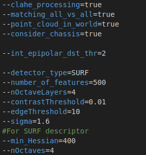
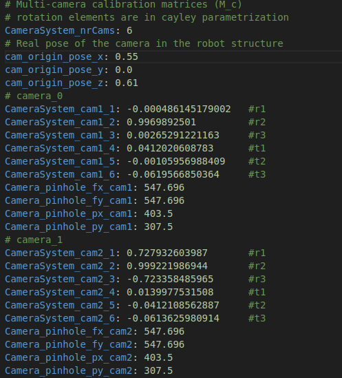

|
AUV Collision Detector 1.0
Library to perform the risk assessment of 3D point clouds around an AUV
|
Package that implements functions for risk assessment of obstacles (in the form of a 3D point cloud) in underwater environments. In contains the necessary functions for feature detection, feature matching, 3D points triangulation, and risk assessment; based on our paper Collision Detection and Avoidance for Underwater Vehicles Using Omnidirectional Vision.
The package was implemented in Ubuntu 18.04 and using ROS melodic. Also, the main data is taken from Stonefish simulator. To build the project the following dependencies are also required:
A set of parameters should be modified to test the code according to your application. First, we have a params.conf file in the configuration folder, to specify parameters such as what type of descriptor to use (i.e. SIFT, SURF, ORB (TBI)), number of features to extract, matching technique, etc. Fig. 1 shows a snapshot of the parameters inside this file.

Finally, the user also needs to specify the camera parameters, which are crucial parameters for the 3D reconstruction to work. Camera rig parameters such as the number of cameras to be used, the extrinsics camera parameters, and intrinsic camera parameters MUST be provided for each camera.

See the package documentation for further info.